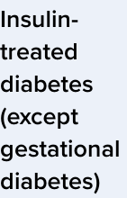

Original context candidate: DM-COM-008
Inactive proposal. Engineering source verification only. Independent human and clinical review pending. No existing corpus, rule, model result or experimental payload is changed.
The original condition-column heading carries a gestational-diabetes exception outside the existing commercial criterion crop. This proposal preserves the heading, commercial-column label and unchanged criterion as separately addressed original source segments. No combined retrieval passage is activated.
Exact source segments and fingerprints · Source scope review
row_heading
condition_column_row_heading · PDF 113 · Printed page 102 · Region [68.03150177001953, 178.60400390625, 114.8134994506836, 251.510009765625]

Exact extracted source text
Insulin-
treated
diabetes
(except
gestational
diabetes)
Display text after declared layout normalization: Insulin-treated diabetes (except gestational diabetes)
commercial_column_heading
licence_column_heading · PDF 113 · Printed page 102 · Region [342.9920959472656, 95.42664337158203, 446.275146484375, 107.71163940429688]
Exact extracted source text
Commercial standards
Display text after declared layout normalization: Commercial standards
canonical_criterion_cell
commercial_column_conditional_criterion · PDF 113 · Printed page 102 · Region [341, 224, 532, 467]

Exact extracted source text
A conditional licence may be considered
by the driver licensing authority subject to at
least annual review, taking into consideration
the nature of the driving task and information
provided by an endocrinologist or consultant
physician specialising in diabetes on whether
the following criteria are met:
• there is no recent history (generally at least
6 weeks) of a ‘severe hypoglycaemic event’
as assessed by the specialist; and
• the person is following a treatment regimen
that minimises the risk of hypoglycaemia;
and
• the person experiences early warning
symptoms (awareness) of hypoglycaemia
(refer to section 3.2.1); and
• there are no end-organ effects that may
affect driving as per this publication.
Full original table context

Independent source/context and clinical-scope review, then a separately versioned corpus and rebuilt indexes before any new retrieval experiment. Current frozen experiments retain their existing source text.